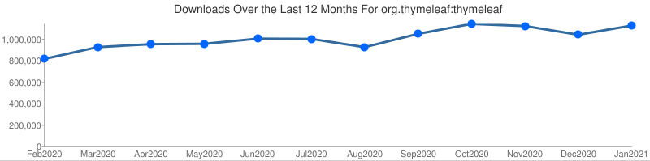

Who is using Thymeleaf?
Well... we don't really know for sure! :-) Thymeleaf is open source, free, and downloadable without restrictions,
so there is actually no reason
why anyone would come and tell us 'hey - we're using your software!'... —
We actually love it like that because it gives our users total freedom, but the downside is we are
not able to offer accurate data about the real degree of success the project is enjoying.
So, what can we show you here? Two things: first, some download figures. And second, some info about those
companies or projects using thymeleaf who have been so kind to take part in this section —
thanks to all of them!
Our figures
These are our download figures, measured by the Maven Central repository, and only referred to the thymeleaf
core jar, this is, not including Spring integration, extras, etc. Also, these figures do not include
distribution (.zip file) downloads from SourceForge.net.

Our users
Cool people use cool technologies! Below you will be able to see some really interesting names, and
learn in their own words what brought them to Thymeleaf and how they are currently using it.
If your company or project is using Thymeleaf in production and you would like to be listed here,
just have a look at this
document in order to learn what we would need from you, and contact us!
|
“Broadleaf is an open source, enterprise-ready eCommerce solution developed using the widely
adopted Spring Framework. We built our 2.0 demo site in Thymeleaf.
After an overwhelmingly positive building experience, picking a templating language for our
admin tool when we were replatforming was obvious. We currently leverage Thymeleaf for both
our 3.0 demo site and internal admin tool.
The flexibility and extension hooks Thymeleaf provided made it the easy choice for a framework
that embodies the same characteristics.”
|
|
“Onegini is an independent free service to create a Digital Identity. With your Onegini account you will be able
to securely register and login to third parties. After registration at Onegini, you control which data to share
with third parties.
We use Thymeleaf for our SAAS service. With Thymeleaf we can work on our templates both with and without running
the service. This way our UI developers can create / maintain the templates while the backend developers make
them dynamic.”
|
|
“PPI AG is a German Software Development Company which develops products and individual software.
We developed a test management system for a large German bank. It was a small
project which concentrated on the things which had the greatest business value. We used Thymeleaf in combination
with Spring MVC. Despite the fact that many team members weren't familiar with the technical stack, the project
could be realized in time and budget.”
|
|
“Sahibinden.com, established back in 2000 by Aksoy Group, played a significant role in the
development of internet in Turkey. Last 13 years, sahibinden.com earned a well deserved
pioneering role in the Turkish internet sector by delivering innovative services and products.
Today, sahibinden.com is one of the largest classifeds and marketplace website with more
than 28 million monthly visitors and over 3 billion page views per month. With a great team
of 300 people, sahibinden.com is enjoying a fast paced growth even after 13 years.
At sahibinden.com, Thymeleaf is mainly used to serve classified search results, which
roughly is 50% of sahibinden.com's traffic.”
|
 |
“Trabe Soluciones is a company based in Spain mainly focused on web development using Java and Ruby On Rails.
We discovered Thymeleaf at a very early stage and, from the very begining, we loved the tidiness
and readability of its templates. We were at the time looking for a replacement for JSP
in our Java stack and we ended up combining Spring MVC and Thymeleaf.
Since then we have successfully developed a variety of internet and intranet applications using
this combination. Thymeleaf has also improved our workflow, easing the communication between
the different profiles involved in our projects.”
|
|
“YobiDrive is a cloud sharing services factory: it contains everything to build fast and
operate at best cost tailored made collaborative cloud services, for any company wanting
to propose services in the area of file sharing, video, collaboration...
YobiDrive uses Thymeleaf in its distributed application server layer, for rendering HTML5
pages and RESTFUL Apis XMLs. Thymeleaf is fully integrated, bringing ease of customization
and giving back the power to the web design specialists.”
|
NOTE: All logos and trademarks are property of their respective owners. The Thymeleaf Project has been granted
permission to show these copyrighted materials under the terms established
here.